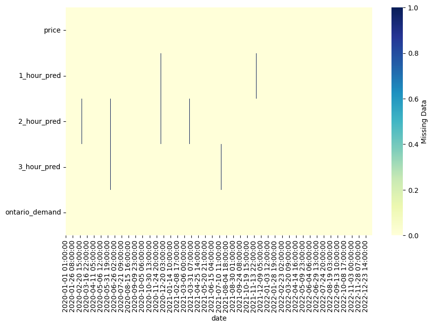
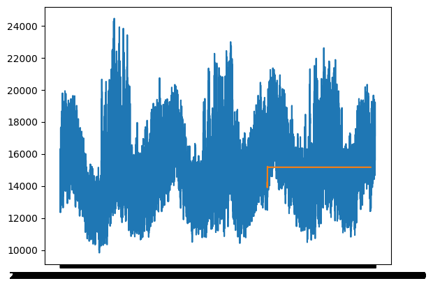
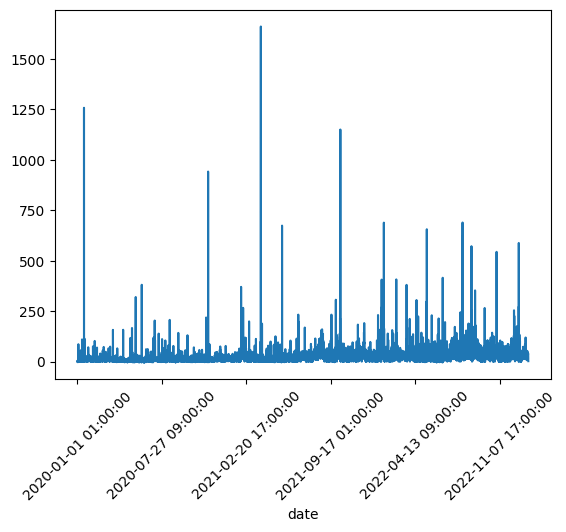
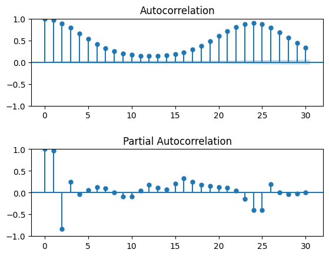
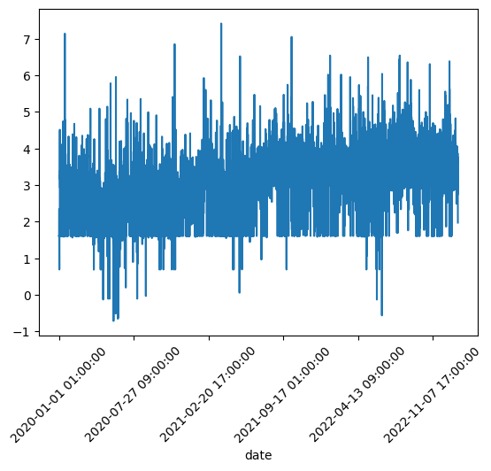
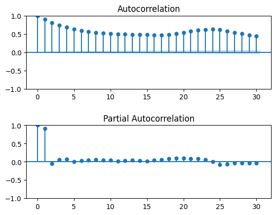
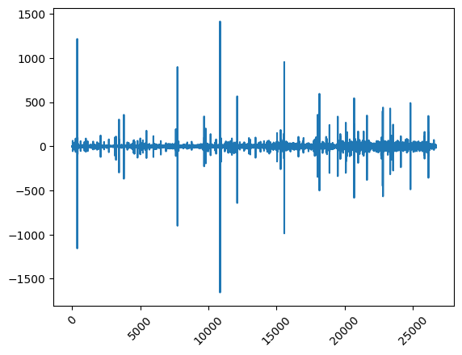
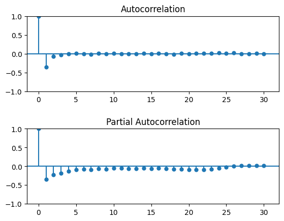
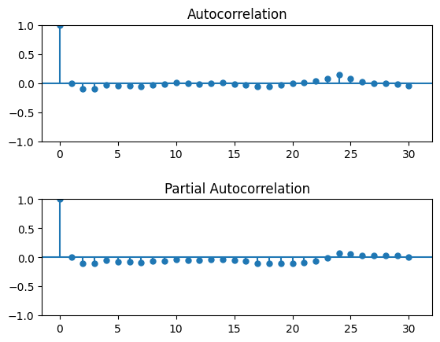

ARMA#
import numpy as np
import pandas as pd
import matplotlib.pyplot as plt
import matplotlib as mpl
# mpl.rcParams['figure.dpi'] = 300
from pylab import rcParams
import seaborn as sns
import statsmodels.api as sm
from statsmodels.graphics.tsaplots import plot_acf
from statsmodels.graphics.tsaplots import plot_pacf
from statsmodels.tsa.seasonal import seasonal_decompose
from statsmodels.tsa.ar_model import AR
from statsmodels.tsa.arima_model import ARMA, ARIMA
from statsmodels.tsa.statespace.sarimax import SARIMAX
import scipy.stats as stats
from pmdarima import auto_arima
import datetime
palettename = "ch:start=.2,rot=-.3"
palette = sns.color_palette(palettename, 10)
palette = palette.as_hex()
sns.set_palette(palette.reverse())
col1 = palette[8]
col2 = palette[5]
col3 = palette[2]
cols = [col1, col2, col3]
palette
---------------------------------------------------------------------------
ModuleNotFoundError Traceback (most recent call last)
Input In [1], in <cell line: 16>()
14 from statsmodels.tsa.statespace.sarimax import SARIMAX
15 import scipy.stats as stats
---> 16 from pmdarima import auto_arima
17 import datetime
19 palettename = "ch:start=.2,rot=-.3"
ModuleNotFoundError: No module named 'pmdarima'
data = pd.read_csv('../Data/final_data.csv')
data
| date | price | 1_hour_pred | 2_hour_pred | 3_hour_pred | market_demand | ontario_demand | 1_lag_pred | 2_lag_pred | 3_lag_pred | |
|---|---|---|---|---|---|---|---|---|---|---|
| 0 | 2020-01-01 01:00:00 | 0.00 | 0.00 | 0.00 | 0.00 | 16565 | 13219 | NaN | NaN | NaN |
| 1 | 2020-01-01 02:00:00 | 0.00 | 0.00 | 0.00 | 0.00 | 16193 | 12895 | 0.00 | NaN | NaN |
| 2 | 2020-01-01 03:00:00 | 0.00 | 0.00 | 0.00 | 0.00 | 16072 | 12554 | 0.00 | 0.00 | NaN |
| 3 | 2020-01-01 04:00:00 | 0.00 | 0.00 | 0.00 | -0.02 | 15930 | 12360 | 0.00 | 0.00 | 0.00 |
| 4 | 2020-01-01 05:00:00 | 0.00 | 0.00 | 0.00 | -0.10 | 15963 | 12353 | 0.00 | 0.00 | 0.00 |
| ... | ... | ... | ... | ... | ... | ... | ... | ... | ... | ... |
| 26683 | 2023-01-16 20:00:00 | 14.39 | 36.07 | 37.53 | 39.73 | 20792 | 18522 | 38.62 | 53.01 | 38.62 |
| 26684 | 2023-01-16 21:00:00 | 14.37 | 33.86 | 36.71 | 38.96 | 20440 | 18195 | 36.07 | 41.47 | 38.62 |
| 26685 | 2023-01-16 22:00:00 | 12.95 | 35.12 | 35.41 | 35.77 | 19721 | 17536 | 33.86 | 37.53 | 42.13 |
| 26686 | 2023-01-16 23:00:00 | 9.10 | 33.08 | 33.64 | 32.22 | 18891 | 16534 | 35.12 | 36.71 | 39.73 |
| 26687 | 2023-01-17 00:00:00 | 2.20 | 14.39 | 32.22 | 32.22 | 18112 | 15630 | 33.08 | 35.41 | 38.96 |
26688 rows × 10 columns
# data = data.rename({'Date': 'date', 'Price':'price', 'Market Demand': "market_demand", 'Ontario Demand': 'ontario_demand'}, axis = 1)
# data.to_csv('../Data/final_data.csv', index = False)
df = data[['date', 'price', '1_hour_pred', '2_hour_pred', '3_hour_pred', 'ontario_demand']]
df = df.set_index('date')
df
| price | 1_hour_pred | 2_hour_pred | 3_hour_pred | ontario_demand | |
|---|---|---|---|---|---|
| date | |||||
| 2020-01-01 01:00:00 | 0.00 | 0.00 | 0.00 | 0.00 | 13219 |
| 2020-01-01 02:00:00 | 0.00 | 0.00 | 0.00 | 0.00 | 12895 |
| 2020-01-01 03:00:00 | 0.00 | 0.00 | 0.00 | 0.00 | 12554 |
| 2020-01-01 04:00:00 | 0.00 | 0.00 | 0.00 | -0.02 | 12360 |
| 2020-01-01 05:00:00 | 0.00 | 0.00 | 0.00 | -0.10 | 12353 |
| ... | ... | ... | ... | ... | ... |
| 2023-01-16 20:00:00 | 14.39 | 36.07 | 37.53 | 39.73 | 18522 |
| 2023-01-16 21:00:00 | 14.37 | 33.86 | 36.71 | 38.96 | 18195 |
| 2023-01-16 22:00:00 | 12.95 | 35.12 | 35.41 | 35.77 | 17536 |
| 2023-01-16 23:00:00 | 9.10 | 33.08 | 33.64 | 32.22 | 16534 |
| 2023-01-17 00:00:00 | 2.20 | 14.39 | 32.22 | 32.22 | 15630 |
26688 rows × 5 columns
plt.figure(figsize=(10,6))
sns.heatmap(df.isna().transpose(),
cmap="YlGnBu",
cbar_kws={'label': 'Missing Data'});

y = df.ontario_demand
y
date
2020-01-01 01:00:00 13219
2020-01-01 02:00:00 12895
2020-01-01 03:00:00 12554
2020-01-01 04:00:00 12360
2020-01-01 05:00:00 12353
...
2023-01-16 20:00:00 18522
2023-01-16 21:00:00 18195
2023-01-16 22:00:00 17536
2023-01-16 23:00:00 16534
2023-01-17 00:00:00 15630
Name: ontario_demand, Length: 26688, dtype: int64
train = y[y.index < '2022']
train
date
2020-01-01 01:00:00 13219
2020-01-01 02:00:00 12895
2020-01-01 03:00:00 12554
2020-01-01 04:00:00 12360
2020-01-01 05:00:00 12353
...
2021-12-31 19:00:00 16870
2021-12-31 20:00:00 16046
2021-12-31 21:00:00 15529
2021-12-31 22:00:00 15112
2021-12-31 23:00:00 14596
Name: ontario_demand, Length: 17543, dtype: int64
valid = y[(y.index >= '2022') & (y.index < '2023')]
valid
date
2022-01-01 00:00:00 14070
2022-01-01 01:00:00 13543
2022-01-01 02:00:00 13254
2022-01-01 03:00:00 12683
2022-01-01 04:00:00 12491
...
2022-12-31 19:00:00 16381
2022-12-31 20:00:00 15834
2022-12-31 21:00:00 15465
2022-12-31 22:00:00 15086
2022-12-31 23:00:00 14453
Name: ontario_demand, Length: 8760, dtype: int64
# train.plot()
# valid.plot();
model = auto_arima(train, start_p=0, start_q=0, test="adf", trace=True, seasonal=True, m = 12, maxiter = 10, method = 'nm', stepwise = True)
model.fit(train)
Performing stepwise search to minimize aic
ARIMA(0,0,0)(1,0,1)[12] intercept : AIC=342487.367, Time=4.72 sec
ARIMA(0,0,0)(0,0,0)[12] intercept : AIC=322936.607, Time=0.62 sec
ARIMA(1,0,0)(1,0,0)[12] intercept : AIC=inf, Time=4.41 sec
ARIMA(0,0,1)(0,0,1)[12] intercept : AIC=351618.402, Time=4.20 sec
ARIMA(0,0,0)(0,0,0)[12] : AIC=387988.495, Time=0.20 sec
ARIMA(0,0,0)(1,0,0)[12] intercept : AIC=inf, Time=3.79 sec
ARIMA(0,0,0)(0,0,1)[12] intercept : AIC=331011.345, Time=3.93 sec
ARIMA(1,0,0)(0,0,0)[12] intercept : AIC=272711.348, Time=0.49 sec
ARIMA(1,0,0)(0,0,1)[12] intercept : AIC=276892.377, Time=4.29 sec
ARIMA(1,0,0)(1,0,1)[12] intercept : AIC=283731.495, Time=4.13 sec
ARIMA(2,0,0)(0,0,0)[12] intercept : AIC=251512.393, Time=0.71 sec
ARIMA(2,0,0)(1,0,0)[12] intercept : AIC=inf, Time=4.47 sec
ARIMA(2,0,0)(0,0,1)[12] intercept : AIC=263986.572, Time=4.38 sec
ARIMA(2,0,0)(1,0,1)[12] intercept : AIC=327863.399, Time=4.63 sec
ARIMA(3,0,0)(0,0,0)[12] intercept : AIC=250170.162, Time=1.05 sec
ARIMA(3,0,0)(1,0,0)[12] intercept : AIC=inf, Time=5.69 sec
ARIMA(3,0,0)(0,0,1)[12] intercept : AIC=281993.177, Time=4.57 sec
ARIMA(3,0,0)(1,0,1)[12] intercept : AIC=316746.940, Time=5.21 sec
ARIMA(4,0,0)(0,0,0)[12] intercept : AIC=250122.176, Time=1.65 sec
ARIMA(4,0,0)(1,0,0)[12] intercept : AIC=inf, Time=4.91 sec
ARIMA(4,0,0)(0,0,1)[12] intercept : AIC=300868.505, Time=4.75 sec
ARIMA(4,0,0)(1,0,1)[12] intercept : AIC=340535.095, Time=6.18 sec
ARIMA(5,0,0)(0,0,0)[12] intercept : AIC=250047.062, Time=2.53 sec
ARIMA(5,0,0)(1,0,0)[12] intercept : AIC=inf, Time=6.54 sec
ARIMA(5,0,0)(0,0,1)[12] intercept : AIC=316732.250, Time=4.65 sec
ARIMA(5,0,0)(1,0,1)[12] intercept : AIC=331545.603, Time=6.75 sec
ARIMA(5,0,1)(0,0,0)[12] intercept : AIC=253704.414, Time=2.15 sec
ARIMA(4,0,1)(0,0,0)[12] intercept : AIC=251737.709, Time=1.72 sec
ARIMA(5,0,0)(0,0,0)[12] : AIC=inf, Time=0.55 sec
Best model: ARIMA(5,0,0)(0,0,0)[12] intercept
Total fit time: 104.111 seconds
ARIMA(5,0,0)(0,0,0)[12] interceptIn a Jupyter environment, please rerun this cell to show the HTML representation or trust the notebook.
On GitHub, the HTML representation is unable to render, please try loading this page with nbviewer.org.
ARIMA(5,0,0)(0,0,0)[12] intercept
model
ARIMA(5,0,0)(0,0,0)[12] interceptIn a Jupyter environment, please rerun this cell to show the HTML representation or trust the notebook.
On GitHub, the HTML representation is unable to render, please try loading this page with nbviewer.org.
ARIMA(5,0,0)(0,0,0)[12] intercept
start_index = valid.index.min()
end_index = valid.index.max()
pred = model.predict(n_periods=len(valid))
pred = pd.DataFrame(pred,index = valid.index,columns=['Prediction'])
forecast = model.predict(n_periods=len(valid))
forecast = pd.DataFrame(forecast,index = valid.index,columns=['Prediction'])
# Plot the predictions for validation set
plt.plot(y, label='Train')
plt.plot(forecast, label='Prediction')
plt.show()

df.price.plot()
plt.xticks(rotation=45);

def acf2(ts):
plt.figure()
plt.subplot(211)
plot_acf(ts, ax=plt.gca(), lags = 30)
plt.subplots_adjust(hspace=0.5)
plt.subplot(212)
plot_pacf(ts, ax=plt.gca(), lags = 30, method = 'ywm')
plt.show()
acf2(df.ontario_demand)

price_shifted = df.price + 5
price_log = np.log(price_shifted)
price_log.plot()
plt.xticks(rotation=45);

acf2(price_log)

price_dif1 = np.diff(df.price)
plt.plot(price_dif1)
plt.xticks(rotation=45);

acf2(price_dif1)

price_log_dif = np.diff(price_log)
plt.plot(price_dif1)
plt.xticks(rotation=45);
acf2(price_log_dif)
